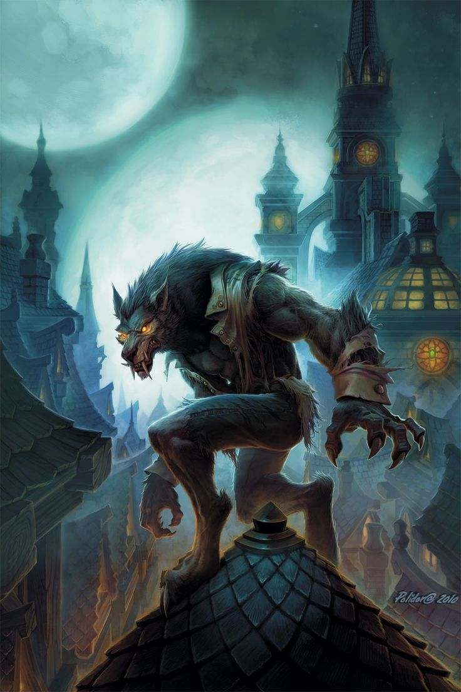

Worgen
Worgen [ˈwɔɹgɛn] are large, lupine humanoids that walk upright, but lope on all fours to run. They primarily inhabit forests and are natural hunters. Being bitten by or drinking the blood of a worgen causes humans and night elves to be transformed into one. After the transformation, those that are overcome by rage and guilt gradually lose all vestiges of their former lives and turn mindless. By controlling their emotions via medication, magic, and self-discipline, worgen may resist being overcome by their feral instincts